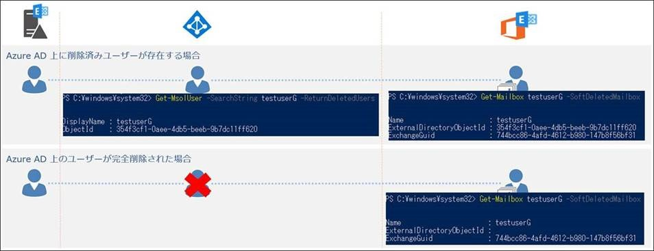

こんにちは、Exchange サポートの渡辺です。
先日公開したブログで、Azure AD と Exchange Online 間の同期の問題に関するトラブルシューティングの基本をご紹介させていただきました。
ただ、あまり事例の紹介ができていないので、今回はトラブルシューティングによって確認できたエラー内容毎に、いくつか詳細と対処方法をご紹介できればと思っています。
事例を紹介するその前に、Exchange Online のメールボックスのおさらい
先日のブログではオンプレミスのリモート メールボックスや Exchange Online のメールボックス等について説明しました。
今回の事例を紹介するにあたっては、他の種類のメールボックスもいくつか登場してくるので、改めて登場人物の整理からしていきます。
アーカイブ メールボックス (インプレース アーカイブ)
※ここではいわゆる普通のメールボックスをプライマリ メールボックスと呼ぶことにします。
アーカイブ メールボックスはプライマリ メールボックスとは別にユーザーが利用できる追加のメールボックスです。
アーカイブ メールボックスが何なのか自体はここではあまり関係無いので詳細は割愛します。詳しくは以下の公開情報をご確認ください。
Title : Exchange Online のアーカイブ メールボックス
URL : https://technet.microsoft.com/ja-jp/library/dn922147(v=exchg.150).aspx
今回の話をするにあたって、アーカイブ メールボックスについて知っておいていただきたいのは、以下の 2 点です。
- オンプレミス側でアーカイブ メールボックスの有効/無効を管理する (※1)
- あくまで、プライマリ メールボックスに紐付いた追加のメールボックスであること
まず 1点目についてはそのままなのですが、Exchange Online でアーカイブ メールボックスを有効化したいときは、オンプレミスのリモート メールボックスに対して Enable-RemoteMailbox コマンドの Archive スイッチを使って有効化します。(逆に無効にするなら Disable-RemoteMailbox -Archive です)
※1 : 厳密にはハイブリッド環境であっても、オンプレミス側でメールユーザーとして作成して Exchange Online にメールボックスを作成している場合等、Exchange Online 側から Enable-Mailbox コマンドでアーカイブ メールボックスを有効化できる場合もあるのですが、ここではオンプレミス側がリモートメールボックスである前提とします。
2 点目については下の絵を見ていただいた方がもしかしたらわかりやすいのかもしれませんが、アーカイブ メールボックスも単に 1 人のユーザーに紐付いたメールボックスの 1 つであり、アーカイブ メールボックス用のユーザー (オブジェクト) ができるわけではありません。
Get-Mailbox や Get-RemoteMailbox で 1 人の情報を取得すれば、そこにはプライマリ メールボックスの情報 (ExchangeGuid) もアーカイブ メールボックスの情報 (ArchiveGuid) も含まれています
非アクティブ メールボックスと Soft-Deleted Mailbox
続いて、非アクティブ メールボックスと Soft-Deleted Mailbox (正しい日本語訳が見つからなかったのですが、オンプレミスで言うところの “切断されたメールボックス” や “削除済みメールボックス” などと呼ばれていたものと似たようなものです) についてです。
どちらも基本的には既に Azure AD 上のユーザーからは切り離されている (紐付いていない) 状態になっているメールボックスを指しており、違いと言えば 30 日で完全に削除されるか、それ以降も保持され続けるかの違いです。このあたりの違いについては以下の公開情報をご確認ください。
Title : Office 365 の非アクティブなメールボックスの概要
URL : https://support.office.com/ja-jp/article/overview-of-inactive-mailboxes-in-office-365-1fbd74e8-7a60-4157-afe8-fe79f05d2038
この 2 つのメールボックスについても今回に限って知っておいてもらいたいのは以下の 2 点だけです。
- Exchange Online にユーザー (オブジェクト) が残っている
- Azure AD 上のユーザーは既に削除されている (Azure AD 上のユーザーが同名で存在していても別のオブジェクトになっている)
よくあるシナリオとしては、対象のオンプレミスのユーザーを削除したり (あるいは AAD Connect の非同期の対象にする)、Azure AD 上のユーザーを直接削除すると作られます。
以下はオンプレミスのユーザーを AAD Connect の同期対象外として Azure AD のユーザーを削除 (削除済みユーザーとなる) したときと、完全削除 (削除済みユーザーからも削除) したときのイメージです。
削除済みユーザーの時点では Soft-Deleted Mailbox の ExternalDirectoryObject に Azure AD のユーザーの ObjectId が設定されていますが、Azure AD のユーザーが削除されると Soft-Deleted Mailbox からも削除されていることが確認できますね。
※ Azure AD 上のユーザーが削除済みユーザーとして残っている場合、Exchange Online 上では Soft-Deleted Mailbox になっていますが、実はまだメールボックスと紐付いた状態になっています。
なので、削除済みユーザーを復元すれば (ディレクトリ同期の対象に戻せば)、ユーザーに紐付いているメールボックスに再接続して引き続き利用可能になります。

Azure AD - Exchange Online 間の同期の問題でよくある事例
それでは、Azure AD と Exchange Online 間の同期で発生する問題について、いくつかのパターンを紹介していこうと思います。
大抵の場合、目に見える事象としては、メールボックスが作成されない、設定変更したのに反映されない、メールボックスが削除されないのいずれかになりますが、その原因は様々です。
ここでは、先日のブログで紹介した Get-MsolUser コマンドを使って確認できるエラー毎にまとめていきます。
1. 訴訟ホールド、インプレース保持、保持ポリシー(SCC) が有効な場合のエラー
まずはエラーの内容から確認しましょう。
といっても、Get-MsolUser コマンドでのトラブルシューティング方法を紹介したときに使用したものと同じで、ここで取り上げるのは以下のエラーです。
ErrorDescription : Exchange can’t disable the mailbox “JPNPR01A004.PROD.OUTLOOK.COM/Microsoft Exchange Hosted Organizations/yowatana002.onmicrosoft.com/testuserA” because it is on In-Place Hold.
基本的にはユーザーを削除した場合に非アクティブ メールボックスになるようなシナリオにおいて、ユーザーは削除せずにライセンスだけを剥奪したりすると発生します。
非アクティブ メールボックスになるシナリオはいくつかあるのですが、以下の 4 つのいずれかによる保持を有効にした状態でユーザーを削除すると作られます。
いずれもライセンスが必要な機能となるため、この状況下でライセンスだけを剥奪するとこのエラーが発生します。
- ExO の eDiscovery でインプレース保持を有効にする
- ExO で訴訟ホールドを有効にする
- SCC (セキュリティ/コンプライアンス センター) の eDiscovery でインプレース保持を適用する
- SCC のアイテム保持ポリシーを適用する
※ ExO の訴訟ホールドが有効な場合だけは少し違うメッセージになります。
ErrorDescription : Exchange can’t disable the mailbox “JPNPR01A004.PROD.OUTLOOK.COM/Microsoft Exchange Hosted Organizations/yowatana002.onmicrosoft.com/testuserB” because it is on litigation hold
これらの保持が有効かどうかについては、基本的には Get-Mailbox コマンドで確認できます。
LitigationHoldEnabled が True なら訴訟ホールドが有効で、InPlaceHolds に何かの値が入っていれば他の 3 つのうちのどれかの設定で保持が有効になっています。
いずれの保持が有効であったとしても対処方法は以下の公開情報にあるとおりで、ライセンスを剥奪して削除するのではなく、同期元のオンプレミスのユーザーを AAD Connect の同期対象外にして Azure AD 上から削除し、Exchange Online 側で非アクティブ メールボックスに変換します。
Title : 非アクティブなメールボックスを作成する際の注意点
URL : https://answers.microsoft.com/ja-jp/msoffice/forum/msoffice_o365admin-mso_exchon-mso_o365b/非アクティ/e82edc4b-d65f-4089-be72-ddfc91a0240a
なお、Get-Mailbox の結果の LitigationHoldEnabled が False で InPlaceHolds が空の場合でも、同様のエラー メッセージが記録される場合も実はあります。
しかも2パターンあります。
1 つ目は、SCC のアイテム保持ポリシーを個別のメールボックスに対してではなく、組織レベルで適用している場合です。
組織レベルで適用されているかなどの詳細は以下のブログでご紹介しているので、もしいずれの保持も設定されていなそうなときはご確認ください。
Title : セキュリティ コンプライアンス センターで設定する保持ポリシーのメールボックスへの適用状況を確認する方法
URL : https://blogs.technet.microsoft.com/exchangeteamjp/2018/04/17/how-to-see-which-retention-policy-is-applied-to-your-mailbox/
2 つ目は、削除の直前までインプレース ホールドや訴訟ホールドが有効だった場合です。
このようなシナリオで削除を試みた場合は、Get-Mailbox の DelayHoldApplied の設定を確認してみてください。
この画像のように DelayHoldApplied が True となっている場合は、意図的にメールボックスの削除が 30 日遅延される動作になり、Exchange Online 的にはその間はインプレース ホールドが有効な状態と判断するため、同じエラーが出ます。
これは、直前まで保持が有効なメールボックスであったので、誤操作などで本来は必要であったデータを間違って削除してしまうことがないように、Exchange Online が意図的に値を True に設定して削除を遅延させています。
もちろん、対象のメールボックスに誤りがなければ遅延させる必要はないので、以下のコマンドで DelayHoldApplied を False に変更してメールボックスが削除されるか確認していただければと思います。
1 | Set-Mailbox -Identity <対象のメールボックス> -RemoveDelayHoldApplied |
2. ExchagneGuid 関連のエラー
続いてのエラーは、一度メールボックスを削除しようとしたものの、やはりメールボックスが必要だということになり、新しいメールボックスを作成しようとしたときに発生したものです。
実際はこのエラーにより新しいメールボックスは作成されていませんでした。
ErrorDescription : The value “01855e55-d849-4631-b160-5c9c1ad491dc” of property “ExchangeGuid” is used by another recipient object. Please specify a unique value.
エラーの内容通り、ExchangeGuid に設定されている値が、他の受信者オブジェクトと競合してしまっているために、エラーになっているようです。
下の絵を見ながら読んでもらえればと思うのですが、このユーザーは以前のメールボックスを削除する前からオンプレミスのリモート メールボックスに、Exchange Online のメールボックスと同じ ExchangeGuid が設定されていました。
オンプレミスのメールボックスを Exchange Online に移動すると自動的にこのような設定になりますね。
そしてメールボックスを削除するためにオンプレミスのリモート メールボックスを Azure AD の同期対象外として Azure AD 上のユーザーを削除したことで、Exchange Online のメールボックスは Soft-Deleted Mailbox になりましたが、引き続き ExchangeGuid は設定されたままになっています。
そして、今回メールボックスを再作成する必要がでてきたので、改めて AAD Connect によりオンプレミスのリモート メールボックスを Azure AD に同期し、新しい Azure AD 上のユーザーを作成しました。
ここでポイントになるのが、最初の Soft-Deleted Mailbox の説明に書いた、Azure AD のユーザーを削除しているため Soft-Deleted Mailbox の ExternalDirectoryObject は既に空になっている (どのユーザーとも紐付いていない) ということです。
つまり、新しく作成された Azure AD のユーザーと Soft-Deleted Mailbox は紐付いていない ≒ 別のオブジェクト であるため、別のオブジェクトと ExchangeGuid が競合していますよということでエラーになっています。
じゃあどうするのかというと、対処は簡単で以下の手順を実施するだけで、オンプレミスのリモート メールボックスの ExchangeGuid を削除すれば Exchange Online に新しいメールボックスが作成されます。
- オンプレミスでリモート メールボックスの ExchangeGuid を削除して値の競合を回避 (
Set-RemoteMailbox -ExchangeGuid 00000000-0000-0000-0000-000000000000) - AAD Connect によるディレクトリ同期を実行
- 作成された新規ユーザーにライセンスを付与
- 必要があれば (必須ではありません)、オンプレミスのリモート メールボックスに対して、Exchange Online のメールボックスに設定されている ExchangeGuid を付与 (
Set-RemoteMailbox -ExchangeGuid xxx)
補足:
上に書いたとおりオンプレミスのリモート メールボックスの ExchangeGuid を空にすることが正しい手順ですが、「じゃあ競合しない ExchangeGuid なら設定しててもいいの？」と思った方向けに補足します。
これの答えは「NO」です。
なぜかと言うと、最初から ExchangeGuid が設定されているユーザーはオンプレミスにメールボックスが存在していた場合のみを想定しており、そのようなユーザーに関しては Exchange Online 上でライセンスを付与しても、メールボックスが作成されない (オンプレミスのメールボックスを移動する必要がある) からです。
※ この場合は属性値の競合が発生しているわけではないので、Get-MsolUser 上は何もエラーは発生しません。メールボックスが作られない＋エラーもないときは、リモート メールボックスに ExchangeGuid が設定されていないか確認してみましょう。
3. ArchiveGuid 関連のエラー
3 つ目のエラーですが、大抵の場合 2 で紹介した ExchagneGuid のエラーに対処した後に出てくることが多いです。
理由は後ほど、、、ということで、ひとまずエラーの内容を見てみましょう。
ErrorDescription : The value “ecbdbf6a-de22-4464-b5a6-332a5c2396e2” of property “ArchiveGuid” is used by another recipient object. Please specify a unique value.
先ほどの ExchangeGuid のエラーと同じように、今度は ArchiveGuid で競合が発生しているようです。
最初に ExchangeGuid を対処した後に出てくることが多いと書きましたが、発生原因は ExchangeGuid と同じで、オンプレミスに設定されている値と同じ値を持つ他の受信者オブジェクトが存在していることが原因なので、ExchangeGuid だけ対処しても今度は ArchiveGuid の競合でひっかかってしまうからというのがその理由です。
1 回の対処で ExchangeGuid と ArchiveGuid の競合両方に対処した方が手間も少ないので、ExchangeGuid のエラーが出たら Archive が有効なメールボックスでないか (このエラーが発生しうる状態でないか) も確認しておきましょう。
次は対処についてなのですが、ExxchangeGuid と同じようにオンプレミスのリモート メールボックスに設定された ArchiveGuid を削除すればいいよねと思った方、少しお待ち下さい。
実はこれをやると今度は下のエラーが発生します。
ErrorDescription : Cannot validate argument on parameter ‘ArchiveGuid’. The argument is empty. Supply an argument that isn’t empty, and try the command again.
残念ながら、ArchiveGuid は ExchangeGuid とは違って値を未設定にして同期を行うことができません。
最初にアーカイブ メールボックスはオンプレミスで有効/無効を管理すると説明しましたが、オンプレミス側で有効化しているのにオンプレミスの ArchiveGuid が未設定というのはそもそもおかしいのでエラーになっているというわけです。
では、どうすればいいのかと言うと、実は ArchiveGuid の競合の場合は ExchangeGuid とは違って、オンプレミスのリモート メールボックスに設定されている ArchiveGuid を競合しないものに変えるだけで問題ありません。
そのため、以下の手順で対処できます。
- オンプレミスでリモート メールボックスの ArchiveGuid を別の値に変更する (Set-RemoteMailbox -ArchiveGuid xxx)
- AAD Connect によるディレクトリ同期を実行
補足:
新しい ArchiveGuid を付与するときは、自動的に GUID を作成してくれる NewGuid メソッドを以下のように使うと便利です。
1 | Set-RemoteMailbox userA -ArchiveGUID ([guid]::NewGUID()) |
- 参考
Title : Guid.NewGuid メソッド
URL : https://msdn.microsoft.com/ja-jp/library/system.guid.newguid(v=vs.110).aspx
まとめ
今回、いくつか Azure AD と Exchange Online の同期に関する内容を紹介しました。
すべてのエラーについて紹介するのはなかなか難しいですが、先日のブログで紹介した Error の確認方法と上で説明したような現在の状態・構成・動作さえ把握できていれば、対処方法などもイメージしやすいのではないかと思ってまとめたつもりではありますので、今後の運用に役立てていただけたら幸いです。
※本情報の内容（添付文書、リンク先などを含む）は、作成日時点でのものであり、予告なく変更される場合があります。